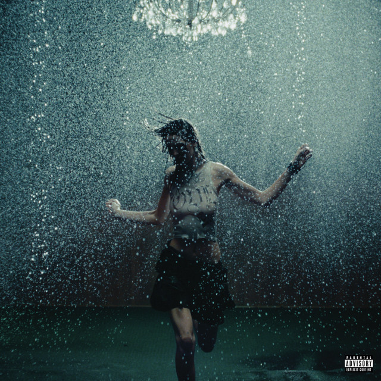
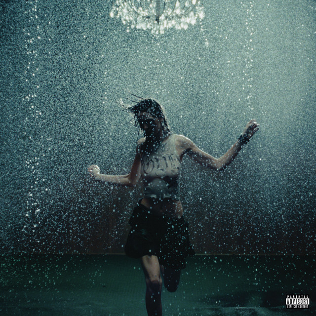

November 12th, 2023
BAD ASS FUCKING KID ANNOUNCEMENT
Nettspend first announced his mixtape "BAD ASS F*CKING KID" on November 12th, 2023. Around this time Nettspend was gaining traction off of his singles such as "drankdrankdrank", "we not like you", "shine n peace", etc.
December 2023
2024 Freestyle
In December of 2023, Nettspend dropped his single "2024 Freestyle" which made his name gain even more recognition in the underground scene. After this single Nettspend was beginning to be less active online.
January 2024
"FUCK CPS"
In January of 2024, Nettspend released a Twitter exclusive single titled "FUCK CPS". In this same month he featured on an xaviersobased track produced by evilgiane titled "40". Nettspend was also changing his look around the time by growing and dying his hair.
April 2024
"nothing like uuu"
In April of 2024, Nettspend released his single "nothing like uuu" which was very successful and blew up online. The music video was very high quality and Nettspend was getting pushed like a star. In June of 2024, Nettspend featured on OsamaSon's single "withdrawals".
June 2024
"Let's Create Art Tour"
In June of 2024, Nettspend did a short four city tour called the "Let's Create Art Tour". In July of 2024, Nettspend released his single "That One Song" which sampled Deftones's "Entombed". The music video for "That One Song" was also very high quality and was heavily promoted.
June 2024
songs removed from streaming platforms
The following days after the release of "That One Song" it was removed from streaming platforms for unknown reasons. In the following weeks many other Nettspend tracks were also taken down from streaming platforms. Some fans claimed it was people mass reporting his music
october 2024
"F*CK SWAG"
The tracks had returned to streaming platforms by September (except for That One Song & nothing like uuu). In October of 2024, Nettspend broke his silence and dropped his single "F*CK SWAG" which released with a Lyrical Lemonade music video. Nettspend was now back active.
 

November 2024
"BAD ASS F*CKING KID Tour"
Nettspend announced his "BAD ASS F*CKING KID Tour" in November of 2024 and hinted at a December release for his debut mixtape. He kept promoting his mixtape and on December 5th he revealed the cover and that it was dropping midnight (December 6th).
December 6th, 2024
mixtape's release
A few hours before the mixtape's release, Nettspend dropped a trailer saying "Midnight" and previewing a new song "Shut Up". On December 6th, 2024, Nettspend released his debut mixtape "BAD ASS F*CKING KID" which sold 9.2k first week.
Even if the mixtape looked successful, Nettspend's fanbase didn't like the project, most feeling that the mixtape wasn't worth the wait or had bad song selection for the tracklist. The roll out for the mixtape was very successful but all of the push didn't work out in the end.